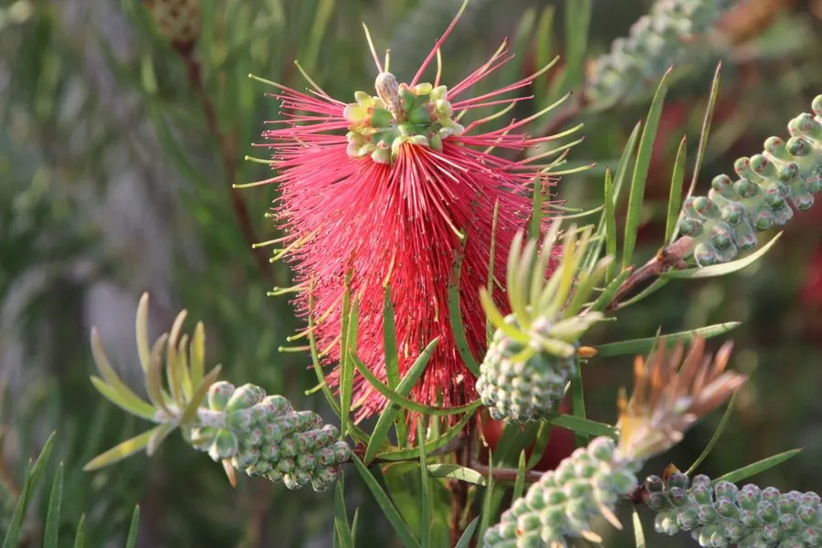

灌木与花木 · 植物界
红千层 Callistemon rigidus

原产澳大利亚的常绿灌木，花形如红色瓶刷、毛茸茸地环绕枝条，是南方城市与庭院中的特色观花植物。
- 分类
- 门被子植物门纲木兰纲目桃金娘目科桃金娘科属红千层属
- 栖息环境
- 海拔 800 米以下的热带亚热带地区，喜高温多湿、光照充足
- 地理分布
- 原产澳大利亚东部，中国广东、广西、福建、海南等地栽培
- 保护级别
- 暂无评估；中国未列入国家重点保护野生植物名录
物种志
红千层为常绿灌木或小乔木，高可达 3 m，树皮灰褐色，枝条坚硬直立；叶片披针形，革质，坚硬，长 5–10 cm，揉碎后有清香。花期 5–6 月，穗状花序顶生，形似瓶刷，由多数雄蕊组成，雄蕊鲜红色、长而密集，花后枝条继续延伸并长出新叶；蒴果木质、杯状，紧贴枝条排列，可宿存多年。
红千层原产澳大利亚东部，中国广东、广西、福建、海南、云南等地栽培，喜高温多湿、光照充足，适宜疏松肥沃、排水良好的酸性土壤，耐旱、不耐寒。因花序形似红色瓶刷、花开繁茂，是南方城市与庭院中极具特色的观花灌木，常用于公园、道路与庭院的绿化，也可作切花；叶片可提取芳香油。红千层与同属的串钱柳外形相似，但红千层枝条硬挺、花序较短，串钱柳枝条下垂、花序细长。
形态与习性
- 株高可达 3 m，枝条硬挺
- 花期5–6 月，花序形似红色瓶刷
- 果期7–8 月，蒴果杯状宿存
- 光照喜光，不耐长期荫蔽
- 水分耐旱，怕积水
- 土壤疏松肥沃的酸性壤土
- 主要用途公园与道路绿化、庭院观赏、切花、叶提取芳香油
趣味知识
- 红千层的花序由密集的红色雄蕊组成，形似红色瓶刷，因此又叫“瓶刷子树”。
- 红千层的蒴果木质杯状，紧贴枝条排列，可以宿存多年不掉。
- 红千层原产澳大利亚，中国南方城市常见栽培，是特色观花植物。
- 红千层的叶片揉碎后有清香，可提取芳香油。